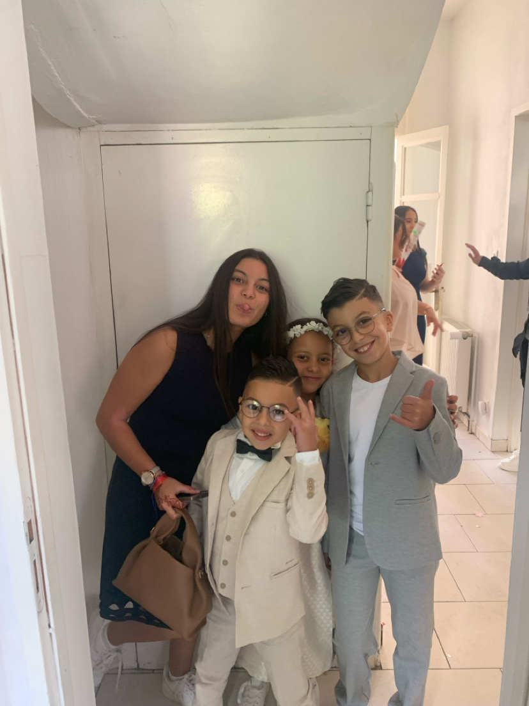
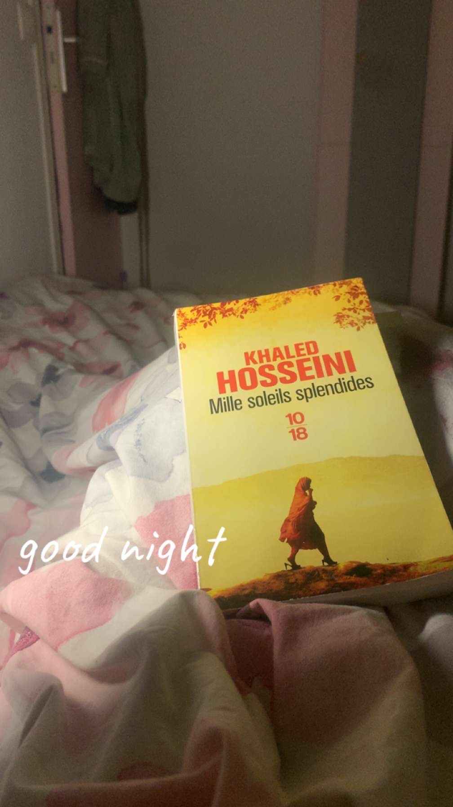
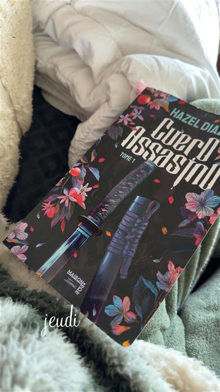
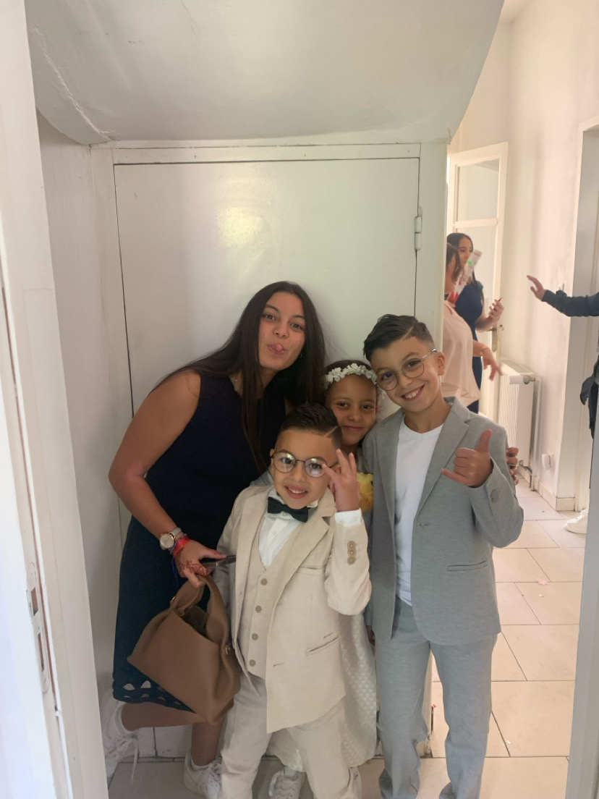
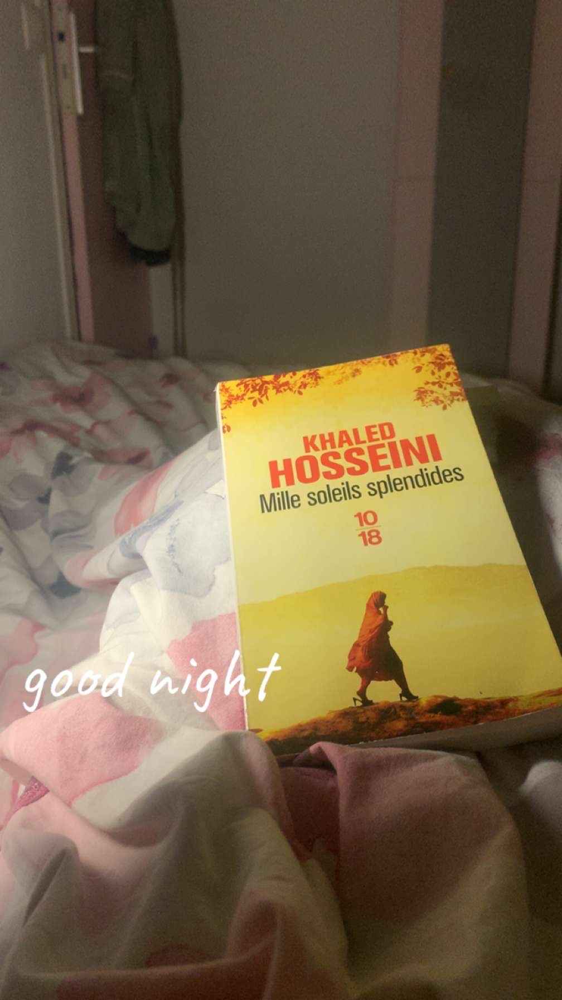
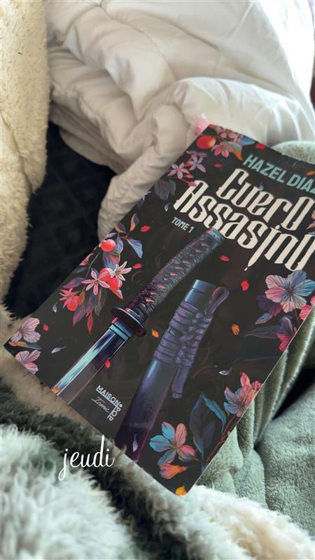

Mes passions
J'adore lire tout sortes de romans (romance, romans policiers etc...)j'aime me plonger dans des histoires différentes et de découvrir de nouveaux univers. La lecture ça me permet de m'évader et de rêver et de m'inspirer pour mes propres idées.
J'aime aussi passer du temps avec les enfants. Que ce soit en les aidant, en jouant, ça me fait plaisir et ça m'apprend beaucoup sur la patience, l'écoute et la créativité. J'ai la chance d'avoir beaucoup de petits cousins et cousines, et j'adore passer du temps avec eux. Jouer avec eux, les aider, leur lire des histoires ou simplement discuter me fait vraiment plaisir. Les voir grandir et apprendre de nouvelles choses est super enrichissant. Ça m'a appris à être plus patiente, plus attentive et à mieux comprendre les autres.
Mélanger ces deux passions me rend curieuse et motivée à apprendre toujours plus, que ce soit à travers des livres ou dans la vie de tous les jours
Pour moi, lire et m'occuper des enfants, ce n'est pas juste un passe-temps : c'est une façon de grandir, de comprendre les autres et de m'amuser en même temps
 




